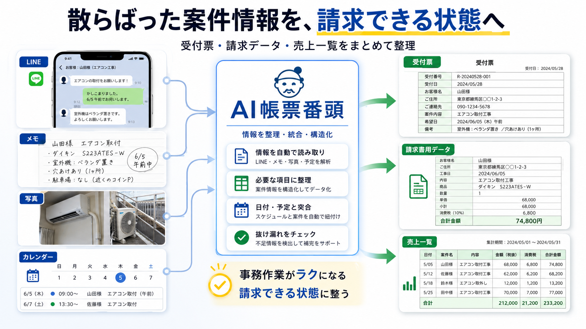
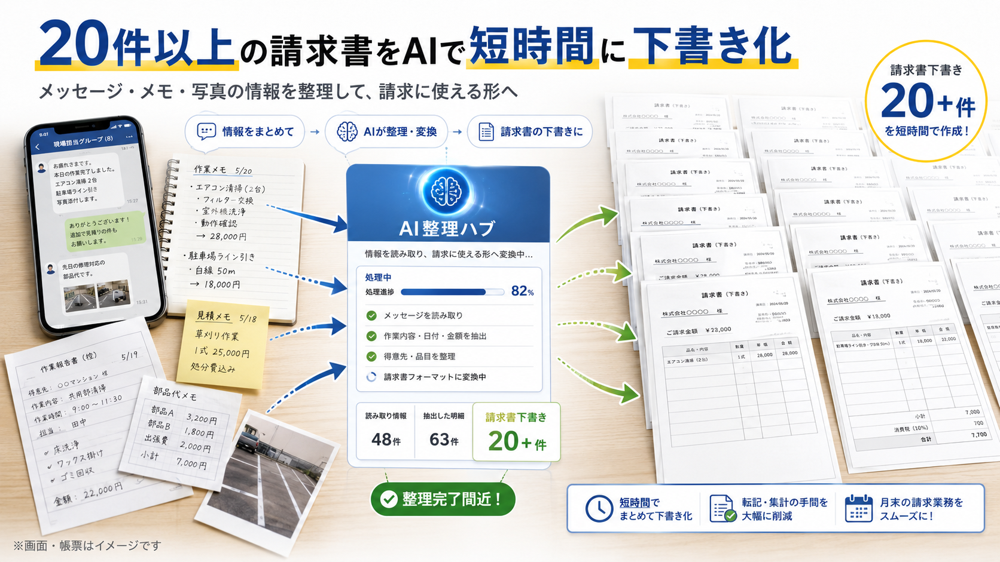
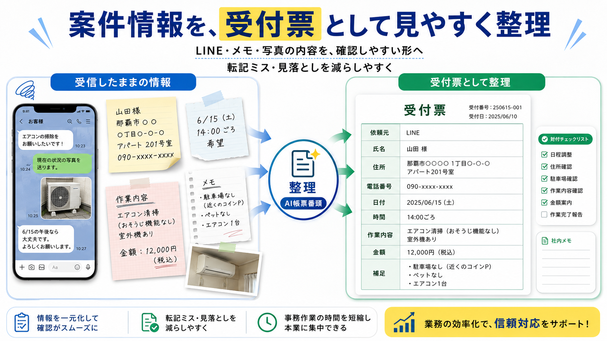
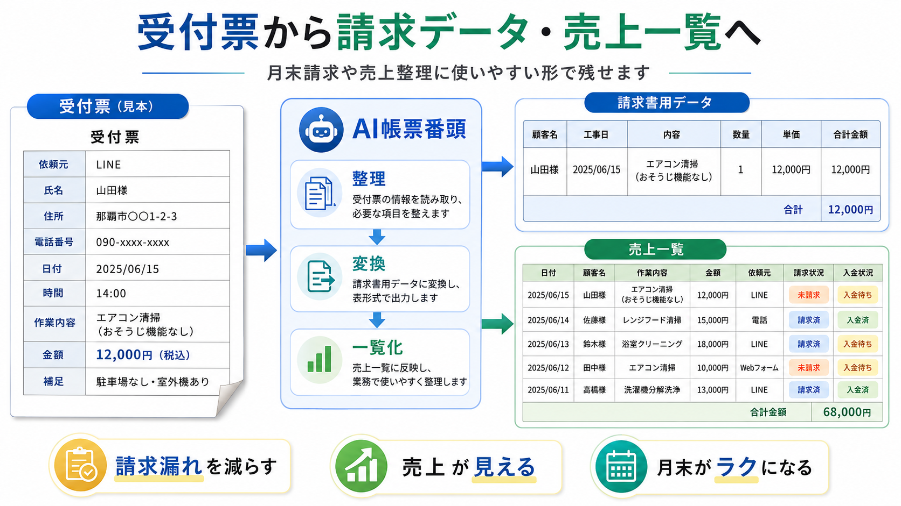

現場経験17年の現場業者が、
自分の仕事のために作った仕組み
LINEに埋もれた案件を、
請求できる状態まで整える。
電話・写真・メモ・カレンダーに散らばった
お客様名・作業内容・金額・請求状況を一つにつなぎ、
受付票・請求データ・売上一覧へ整理します。
今使っている請求書や仕事の流れを、
全部変える必要はありません。
- 個人情報は隠した状態でOK
- 相談だけで終了してもOK
- 強引な営業はありません
仕事は終わった。
でも、請求は終わっていない。
これは、忙しい人の能力不足ではありません。
案件情報を「どこへ残すか」が決まっていないため、
月末にもう一度集め直す必要がある状態です。
導入前と導入後の流れ
案件情報がバラバラの場所に残る
月末に思い出しながら請求書作成
受付時に案件情報を整理
作業後に内容と金額を確認
請求書用データへ反映
未請求・売上一覧を確認
AI帳票番頭が行うこと
「できる機能」ではなく、情報がどう流れるかを整えます。
LINE・電話・写真・メモなど、今ある形のまま届く情報を確認します。
お客様名・作業内容・日程・金額などを、受付票の形に整えます。
整理された内容を見て、金額や作業内容の最終確認を行います。
請求書作成に使えるデータと、未請求・売上の確認用一覧につなげます。
AIは整理と下書きを担当し、金額・作業内容・送信前の最終確認は人間が行います。
- AI整理用プロンプト
- → ChatGPTに渡す、繰り返し使える指示文
- Googleスプレッドシート
- → Excelに近い、一覧管理用の表
- Makeなどの連携
- → さらに自動化が必要になったときに追加する仕組み
実際の整理画面・デモ
散らばった案件情報を、受付票・請求データ・売上一覧へつなげる整理イメージです。 実際の運用画面ではなく、動作やテンプレートの参考例としてご覧ください。

整理イメージ：案件情報の流れを一つにつなげる考え方

整理イメージ：請求書用データへの反映例

受付票テンプレート例

売上一覧（一覧管理用の表）例
まず、自分の現場で使っています。
BCサービスでは、受付・日程調整・現場作業・請求管理を
実際の業務の中で行っています。
LINEや依頼票に届く情報を整理し、
受付票、カレンダー、請求管理につなげる仕組みを、
自分たちの現場で試しながら改善してきました。
机上で考えたシステムではなく、
忙しい現場のあとでも続けられるかを基準に作っています。
このサービスを作った人

照屋 昴
BCサービス代表
現場業経験17年
私はシステム会社ではなく、
現在も現場に出ている事業者です。
受付、日程調整、作業、請求、売上管理を
自分で回してきた中で、
「仕事は終わっているのに、事務作業だけが残る」
という状態を何度も経験してきました。
だからAI帳票番頭では、
高機能でも続けられない仕組みではなく、
今の仕事を大きく変えずに使えることを優先しています。
選ばれる理由
01
今のやり方を全部捨てなくていい今使っている請求書や受付の流れに合わせて、必要な部分だけ整えます。
02
現場業者自身が作っているシステム会社ではなく、今も現場に出ている事業者が自分の業務のために作った仕組みです。
03
最初は手動＋AIで小さく始められるいきなり全部を変えるのではなく、一番困っている部分から始められます。
向いている方・向いていない方
向いている方
- LINE・電話・写真・メモで案件を受けている
- 月末にまとめて請求書を作っている
- 請求済み・未請求を確認しづらい
- 今の請求書を残したまま改善したい
- 最初は小さく始めたい
向いていない方
- 最初から完全無人・完全自動を求めている
- 人間による最終確認をしたくない
- すでに案件管理システムを十分使いこなしている
- 汎用テンプレートを最安値で購入したいだけ
導入プラン
無料診断
¥0
まず現状を確認したい方へ
今の管理方法を確認し、どこを整理するとラクになるかを簡単にお伝えする入口です。
成果物を納品する有料作業ではありません。相談だけで終了しても構いません。
業務整理レポート
¥19,800 （税込）
自分で改善を進めたい方、本導入前に設計を確認したい方へ
現状を整理し、改善ポイントを見える化するレポートプランです。
- 現状ヒアリング
- 現在の受付・請求方法の整理
- 二度手間や抜けやすい箇所の確認
- 改善ポイントの簡易レポート
- ChatGPTで使える簡易指示文1つ
- 導入する場合の推奨構成
テンプレート作成や本格的な仕組み化は、ミニ導入・標準導入で対応します。
業務整理レポートを相談する月末請求ミニ導入
¥49,800 （税込）
まず月末請求をラクにしたい方へ
受付から請求までの流れを、最小限の構成で整えるプランです。
- 受付票テンプレート
- 案件整理用のAI指示文
- 請求書用データの整理方法
- 基本的な使い方説明
- 最小限の運用ルール
売上一覧や未請求確認の仕組みまで含む場合は標準導入をご検討ください。
ミニ導入を相談する受付から売上まで標準導入
¥148,000 （税込）
受付から売上確認まで一通り整えたい方へ
受付・請求・売上確認まで含む標準的な導入プランです。
- 受付票テンプレート
- 請求書用データ表
- 売上一覧
- 未請求確認の仕組み
- AI整理用の指示文
- Googleスプレッドシート設計
- 使い方説明
- 運用ルール整理
さらに自動化が必要になった場合は、別途ご相談ください。
標準導入を相談する無料診断の流れ
請求書、受付表、メモ、LINE画面など。個人情報は隠した状態で構いません。
何が問題か、どこから始めるとよいかを確認します。
相談だけで終了しても構いません。必要な場合のみ、有料プランをご案内します。
相談だけで終わっても大丈夫です。強引な営業は行いません。
よくある質問
パソコンが苦手でも使えますか？
はい。今の請求書や受付方法に合わせて作るので、難しい操作を増やしすぎない形で始めます。整理の手順も、使い方に沿って説明します。
今使っている請求書を残せますか？
はい。決まったフォーマットを押し付けるのではなく、今使っている請求書・受付票・売上一覧に合わせて設計します。必要な項目を逆算して、受付時点で残すべき情報を整理します。
AIが勝手に請求書を送信しませんか？
しません。AIは整理と下書きを担当し、金額・作業内容・送信前の最終確認は人間が行う前提です。AIが勝手に金額を決めたり、請求書を送信したりする仕組みではありません。
個人情報を見せる必要がありますか？
お客様名や住所などの個人情報は、隠した状態で送っていただいて大丈夫です。管理の流れや項目の残し方を確認するための相談です。
最初から自動化が必要ですか？
必要ありません。まずは手動とAIで小さく始め、慣れてから必要に応じて連携を追加する流れを推奨しています。
MakeやAirtableを使う必要がありますか？
最初から必須ではありません。まずは案件情報の整理と請求用データの残し方から始め、さらに自動化が必要になったときに追加する仕組みとして検討できます。
一人親方でも利用できますか？
はい。LINE・電話・写真・メモで案件を受けている一人親方や小規模事業者の方に向いています。受付から請求まで自分で回している方のための仕組みです。
相談後に断ってもよいですか？
もちろん大丈夫です。無料診断は相談だけで終了しても構いません。必要な場合のみ、有料プランをご案内します。強引な営業は行いません。
まずは、今使っている請求書やメモを
そのまま見せてください。
きれいに整理する必要はありません。
どこに情報が散らばり、どこで二度手間が発生しているかを見るところから始めます。
- 個人情報は隠してOK
- 相談だけでもOK
- 強引な営業なし